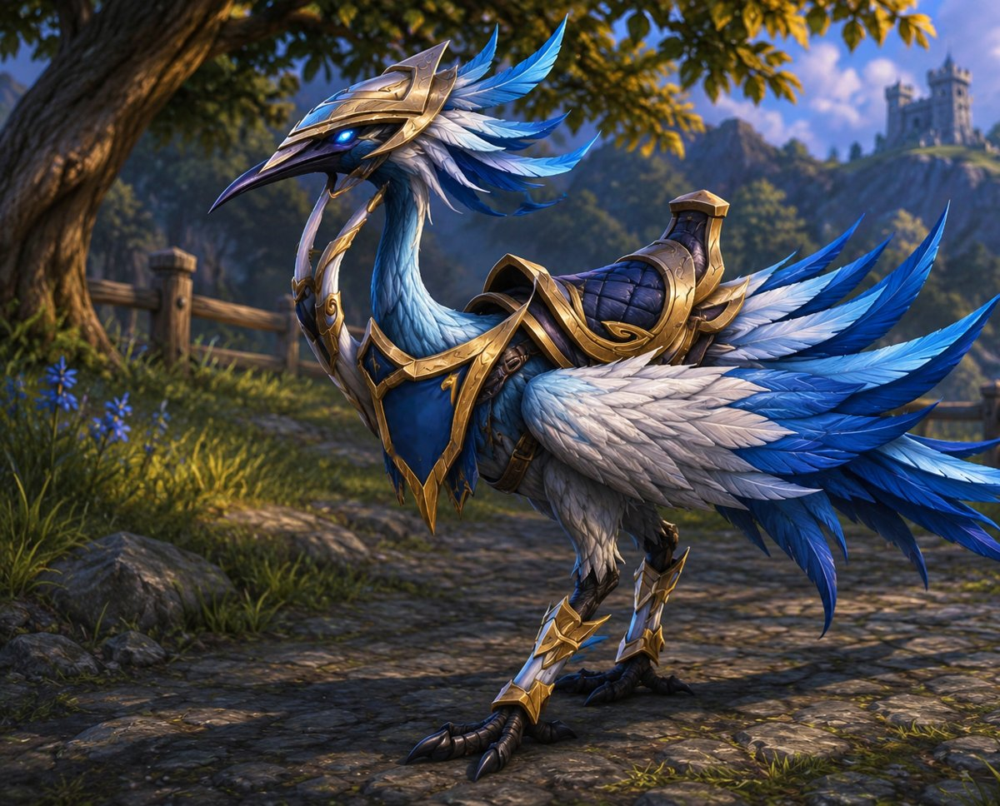

News › Correctifs du 19 novembre
Correctifs du 19 novembre : monture des Éolides, Hybrideur de graines et paladin Vindicte
20 novembre 2026
Une petite série de correctifs, avec une bonne nouvelle pour les Éolides : la réduction de réputation fonctionne enfin chez leur instructeur de monte.

Races
- Éolides : la réduction de 10 % accordée à Honoré s'applique maintenant à la monte Apprenti et Compagnon chez Genn Beautemps, sur l'île de Zéphras. Soit 90 po au lieu de 100, et 900 po au lieu de 1 000. Nous l'avons vérifié en jeu.
- Taurens : la Culture réussit plus souvent sur les herbes connues, et fonctionne de nouveau avec le Lotus pourpre.
Classes et donjons
- Paladin Vindicte : la Spécialisation Arme 2M augmente maintenant tous les dégâts Sacré quand tu portes une arme à deux mains.
- Cité de Dalaran : l'Ombre de l'archimage ne disparaît plus dès le début du combat.
- Terrasse du Façonneur : l'Horion empoisonné de Vitrix fait moins mal.
Campements
- L'Hybrideur de graines est de retour, avec des valeurs revues : la combinaison peut maintenant échouer.
- Les Graines de plantes peu courantes ne passent plus dans l'Hybrideur.
Objets et quêtes
- Les Granules de magie instable deviennent liées : on ne peut plus les échanger.
- Rives Claires : Mosh'gra peut de nouveau donner du butin rare.
- Montagnes d'Alterac : pendant « Foudrepique décode », on peut récupérer un nouveau Parchemin ensorcelé si on a détruit l'original.
- « La chasse aux ectoplasmes » fonctionne sur le bon type de créature.
Pour tout savoir sur ta monture, vois notre page Montures.
Source : JudgeHype, d'après les notes de correctifs de Blizzard.